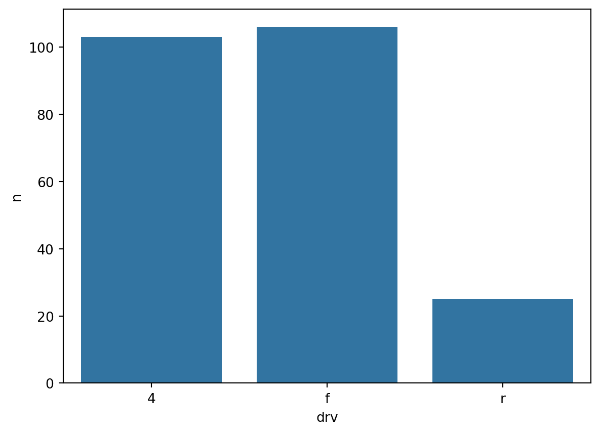

import pandas as pd
import numpy as np
import seaborn as sns
import matplotlib.pyplot as plt
import math
def normal_pdf(x, mu, sigma):
a = 1 / (np.sqrt(2 * np.pi * (sigma**2)))
b = np.exp(-0.5 * ((x - mu) / sigma) ** 2)
return a * b
x = np.linspace(-10, 10, 100)
y = normal_pdf(x, 3, 2)
plt.plot(x, y)
plt.show()1. 정규분포 pdf 값을 계산하는 자신만의 파이썬 함수를 정의하고, 정규분포 mu = 3, sigma = 2 의 pdf를 그릴 것.
2. 파이썬 scipy 패키지 사용해서 다음과 같은 확률을 구하시오.
X ~ N(2, 3^2)
from scipy.stats import norm
# 1) P(X < 3)
norm_cdf = norm.cdf(3, 2, 3)
print(f"P(X < 3)일 확률은 {norm_cdf:.2f} 이다.")
#2) P(2 < X < 5)
norm_cdf2 = norm.cdf(5, 2, 3) - norm.cdf(2, 2, 3)
print(f"P(2 < X < 5)일 확률은 {norm_cdf2:.2f} 이다.")
#3) P(X < 3 or X > 7)
norm_cdf3 = norm.cdf(7, 2, 3) - norm.cdf(3, 2, 3)
print(f"P(X < 3 or X > 7)일 확률은 {1 - norm_cdf3:.2f} 이다.")P(X < 3)일 확률은 0.63 이다.
P(2 < X < 5)일 확률은 0.34 이다.
P(X < 3 or X > 7)일 확률은 0.68 이다.3. LS 빅데이터 스쿨 학생들의 중간고사 점수는 평균이 30이고, 분산이 4인 정규분포를 따른다.
상위 5%에 해당하는 학생의 점수는?
import scipy.stats as stats
mu=30
sigma = 2
score = stats.norm.ppf(0.95, mu, sigma)
print(f"점수는 {score:.2f} 입니다.")점수는 33.29 입니다.seaborn, matplotlib, plotly 이용한 그래프
import pandas as pd
import seaborn as sns
import matplotlib.pyplot as plt
mpg = pd.read_csv('data/mpg.csv')
df_mpg = mpg.groupby('drv', as_index = False) \
.agg(n = ('drv', 'count'))
df_mpg | drv | n | |
|---|---|---|
| 0 | 4 | 103 |
| 1 | f | 106 |
| 2 | r | 25 |
seaborn 사용한 산점도
plt.figure(figsize=(5, 4))
sns.scatterplot(data = mpg,
x = 'displ', y = 'hwy',
hue ='drv') \
.set(xlim =[3, 6], ylim=[10, 30])
plt.show()
plotly사용한 산점도
import plotly.express as px
px.scatter(data_frame =mpg, x = 'cty', y= 'hwy', color = 'drv')sns.barplot
sns.barplot(data= df_mpg, x = 'drv', y='n')
plt.show()
sns.countplot
sns.countplot(data= mpg, x='drv')
plt.show()204p.
Q1. mpg 데이터의 cty(도시 연비)와 hwy(고속도로 연비)간에 어떤 관계가 있는지 알아보려고 한다. x축은 cty, y축은 hwy로 된 산점도를 만들어보라.
import pandas as pd
import seaborn as sns
import matplotlib.pyplot as plt
mpg = pd.read_csv('data/mpg.csv')
sns.scatterplot(data = mpg,
x = 'cty', y = 'hwy')
plt.show()
Q2. 미국의 지역별 인구통계 정보를 담은 midwest.csv 를 이용해 전체 인구와 아시아인 인구 간에
어떤 관계가 있는지 알아보려고한다. x축은 poptotal(인구 전체), y 축은 popasian(아시아인 인구)
로 된 산점도를 만들어라. 전체 인구는 50만 명 이하, 아시아인 인구는 1만명 이하인 지역만 산점도에 표시
import pandas as pd
import seaborn as sns
import matplotlib.pyplot as plt
midwest= pd.read_csv('data/midwest.csv')
sns.scatterplot(data = midwest, x = 'poptotal', y = 'popasian') \
.set(xlim= (0, 5000000), ylim=(0,10000))
plt.show()211p.
Q1. 어떤 회사에서 생산한 ‘suv’ 차종의 도시 연비가 높은지 알아보려고 한다. ‘suv’ 차종을 대상으로 cty(도시 연비) 평균이 가장 높은 회사 다섯 곳 을 막대 그래프로 표현해라. 막대는 연비가 높은 순으로 정렬하라
import pandas as pd
import seaborn as sns
import matplotlib.pyplot as plt
mpg = pd.read_csv('data/mpg.csv')
df =mpg.query("category == 'suv'") \
.groupby('manufacturer', as_index=False) \
.agg( mean_cty = ('cty', 'mean' )) \
.sort_values('mean_cty', ascending=False)\
.head()
df
sns.barplot(data = df, x = 'manufacturer', y='mean_cty')Q2. 자동차 중에 어떤 category(자동차 종류)가 많은지 알아보려고 한다. sns.barplot()을 이용해 자동차 종류별 빈도를 표현한 막대 그래프를 만들어보라. 막대는 빈도가 높은 순으로 정렬하기.
import pandas as pd
import seaborn as sns
import matplotlib.pyplot as plt
mpg = pd.read_csv('data/mpg.csv')
df_mpg = mpg.groupby('category', as_index=False) \
.agg(count = ('category', 'count')) \
.sort_values('count', ascending=False)
df_mpg| category | count | |
|---|---|---|
| 6 | suv | 62 |
| 1 | compact | 47 |
| 2 | midsize | 41 |
| 5 | subcompact | 35 |
| 4 | pickup | 33 |
| 3 | minivan | 11 |
| 0 | 2seater | 5 |
import seaborn as sns
sns.barplot(data= df_mpg, x = 'category' , y = 'count')